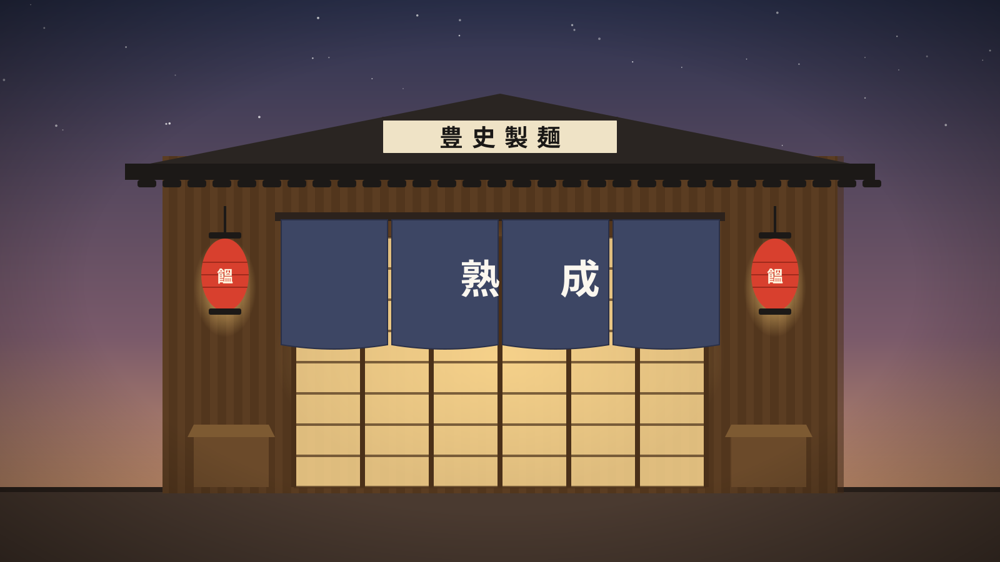
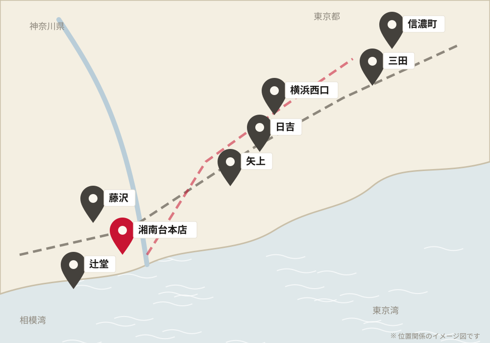
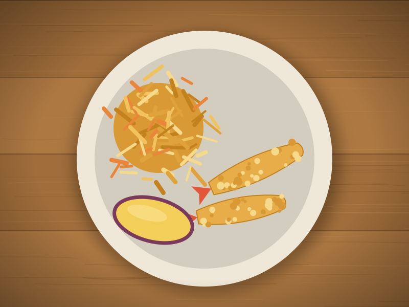
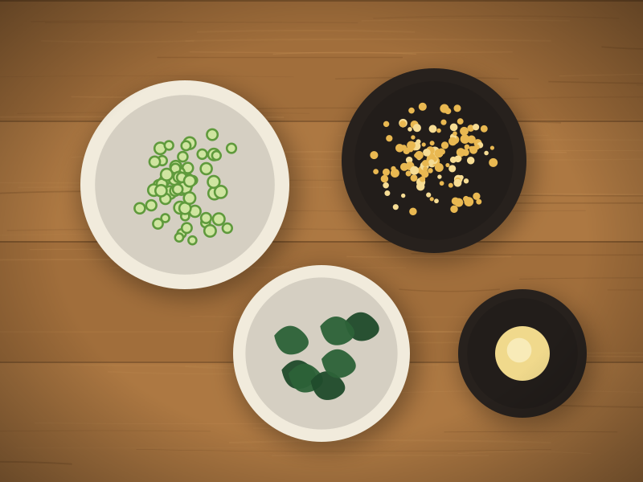

お店を探す店舗・ご利用方法
湘南台から、三田まで。
神奈川と東京に、
八軒の熟成庫があります。
店舗一覧

-
豊史製麺 湘南台本店
本店- 住所
- 神奈川県藤沢市湘南台0-0-0
- 営業時間
- 10:30〜22:00（L.O. 閉店30分前）
- 席数
- 48席
- お持ち帰り
- キャッシュレス
- 駐車場
-
豊史製麺 藤沢
- 住所
- 神奈川県藤沢市藤沢0-0-0
- 営業時間
- 11:00〜22:00（L.O. 閉店30分前）
- 席数
- 36席
- お持ち帰り
- キャッシュレス
- 駐車場
-
豊史製麺 辻堂
NEW- 住所
- 神奈川県藤沢市辻堂0-0-0
- 営業時間
- 11:00〜21:30（L.O. 閉店30分前）
- 席数
- 40席
- お持ち帰り
- キャッシュレス
- 駐車場
-
豊史製麺 日吉
NEW- 住所
- 神奈川県横浜市港北区日吉0-0-0
- 営業時間
- 10:30〜22:00（L.O. 閉店30分前）
- 席数
- 42席
- お持ち帰り
- キャッシュレス
- 駐車場
-
豊史製麺 矢上
- 住所
- 神奈川県横浜市港北区日吉0-0-0
- 営業時間
- 11:00〜21:00（L.O. 閉店30分前）
- 席数
- 28席
- お持ち帰り
- キャッシュレス
- 駐車場
-
豊史製麺 横浜西口
- 住所
- 神奈川県横浜市西区南幸0-0-0
- 営業時間
- 10:30〜23:00（L.O. 閉店30分前）
- 席数
- 56席
- お持ち帰り
- キャッシュレス
- 駐車場
-
豊史製麺 三田
NEW- 住所
- 東京都港区三田0-0-0
- 営業時間
- 10:30〜22:00（L.O. 閉店30分前）
- 席数
- 38席
- お持ち帰り
- キャッシュレス
- 駐車場
-
豊史製麺 信濃町
- 住所
- 東京都新宿区信濃町0-0-0
- 営業時間
- 11:00〜21:00（L.O. 閉店30分前）
- 席数
- 30席
- お持ち帰り
- キャッシュレス
- 駐車場
住所はすべて架空のものです。
ご注文の流れ
- 一

うどんを選ぶ
入口でうどんの種類とサイズを伝えます。麺のかたさも選べます。
- 二

天ぷらをとる
揚げたての天ぷらやおむすびを、トレーにお好きなだけ。
- 三

お会計
現金のほか、カード・交通系IC・QRコード決済が使えます。
- 四

薬味でしあげる
無料の薬味9種類で、自分だけの一杯に。

お持ち帰り
熟成の麺は、時間がたってものびにくいのが自慢です。ご自宅でも、職場でも、できたてに近いおいしさを。
- アプリで予約受け取り時間を15分単位で指定できます。
- 店頭で受け取り専用カウンターで、お名前をお伝えください。
- 2時間以内にお早めにお召し上がりください。
うどん弁当 390円から
サービス

豊史製麺アプリ
来店ごとにスタンプがたまり、10個でうどん1杯無料。お持ち帰りの予約もこちらから。
デジタルギフト
500円分から、メッセージを添えてSNSで贈れます。
キャッシュレス決済
クレジットカード、交通系IC、QRコード決済に全店で対応しています。
今日の一杯を、
探しに行こう。